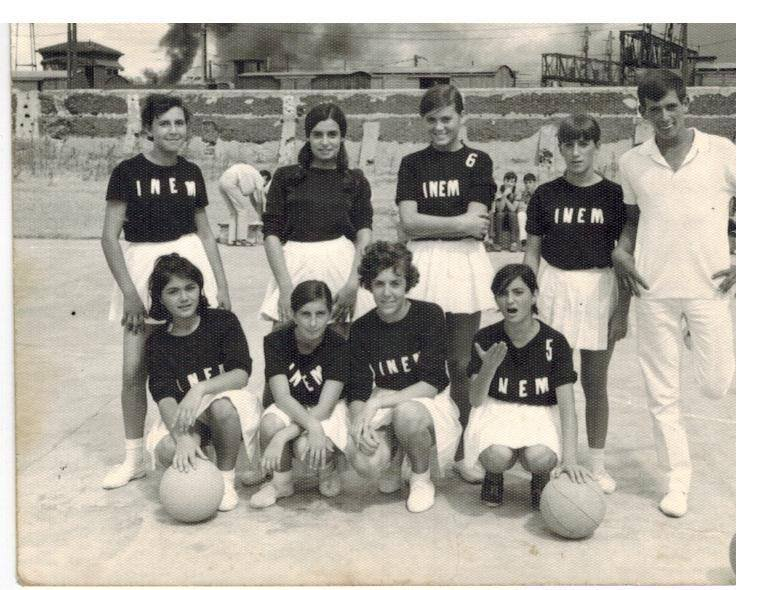

Historia

En 1891, James Naismith intentaba idear un deporte que sus alumnos pudieran practicar bajo techo, pues los duros inviernos en Nueva Inglaterra dificultaban la realización de ejercicio al aire libre. Las actividades de educación física que se practicaban en la época se basaban en los métodos alemanes, monótonos y poco indicados para un grupo de jóvenes llenos de energía. Naismith se inclinaba por un juego de pelota, para motivar mejor a sus alumnos, pero los deportes populares por entonces se caracterizaban predominantemente por el uso de la fuerza o el contacto físico y eran inadecuados para practicarlos en un gimnasio. Aunque a veces se mencionan los antiguos juegos de pelota pok-ta-pok y tlachtli —de origen maya y azteca respectivamente— como antecedentes del baloncesto moderno, según su inventor la idea de utilizar los tiros a una canasta como objetivo del juego provino de un antiguo juego de su infancia denominado duck on a rock —o 'pato sobre una roca'— que consistía en alcanzar un objeto colocado sobre una roca lanzándole una piedra. Naismith encargó cajas de unos 45 cm2 para utilizar como blanco, pero el bedel del colegio solo pudo conseguirle unas cestas de melocotones, que mandó colgar en las barandillas de la galería superior que rodeaba el gimnasio, a una determinada altura.
Como Naismith tenía 18 alumnos, decidió que los equipos estuviesen formados por nueve jugadores cada uno. Pronto el número de jugadores se redujo a siete, y, en 1896, al actual de cinco jugadores.
El tablero surgió para evitar que los seguidores situados en la galería donde colgaban las cestas, pudieran entorpecer la entrada del balón. La introducción del tablero, a comienzos del siglo XX, dio lugar a la jugada llamada rebote, que ha pasado a ser fundamental en el juego. Las cestas de melocotones dieron paso a aros metálicos con una red sin agujeros hasta evolucionar a la malla actual.
Baloncesto femenino
La historia del baloncesto femenino comenzó en 1892 en el Smith College de Massachusetts con Senda Berenson, una profesora de educación física. Al poco tiempo de recibir su puesto, Berenson se reunió con Naismith para obtener más información sobre el baloncesto, y modificó las reglas de Naismith para adaptarlo a las convenciones femeninas. Por ejemplo, prohibió arrebatar el balón a una contrincante o de botarlo más de tres veces, para no «desarrollar una tendencia al nerviosismo y perder la gracia, la dignidad y la estima de sí misma». Convencida del interés del deporte y los valores que podía transmitir, organizó el primer partido universitario femenino en el Smith College el 21 de marzo de 1893, disputado entre las alumnas de primer y segundo año. El deporte se implantó en varias universidades femeninas, como Wellesley, Vassar y Bryn Mawr College. El 4 de abril de 1896, el equipo de la universidad de Stanford se enfrentó a la de Berkeley en un partido de nueve contra nueve, que se saldó con la victoria de Stanford por 2-1.
Las primeras estrellas femeninas estadounidenses fueron Mildred Didrickson de las Golden Cyclones y las jugadoras del equipo All American Red Heads. Este último realizaba espectáculos de exhibición como los Globetrotters de Harlem y jugaba a veces contra equipos masculinos, si bien tenían la obligación de jugar maquilladas y cuidar su apariencia.
El baloncesto femenino comenzó a obtener más reconocimiento en la segunda mitad del siglo XX, con la creación de la Copa Mundial de Baloncesto Femenino en 1953 y el AfroBasket femenino en 1966. El deporte despegó en Estado Unidos tras la adopción del Título IX que, al prohibir la discriminación por sexo en los programas educativos fundados por el Estado, supuso la aparición de numerosos equipos universitarios; en 1982 se creó un Campeonato NCAA de baloncesto femenino. En 1976, el baloncesto femenino se convirtió en deporte olímpico.